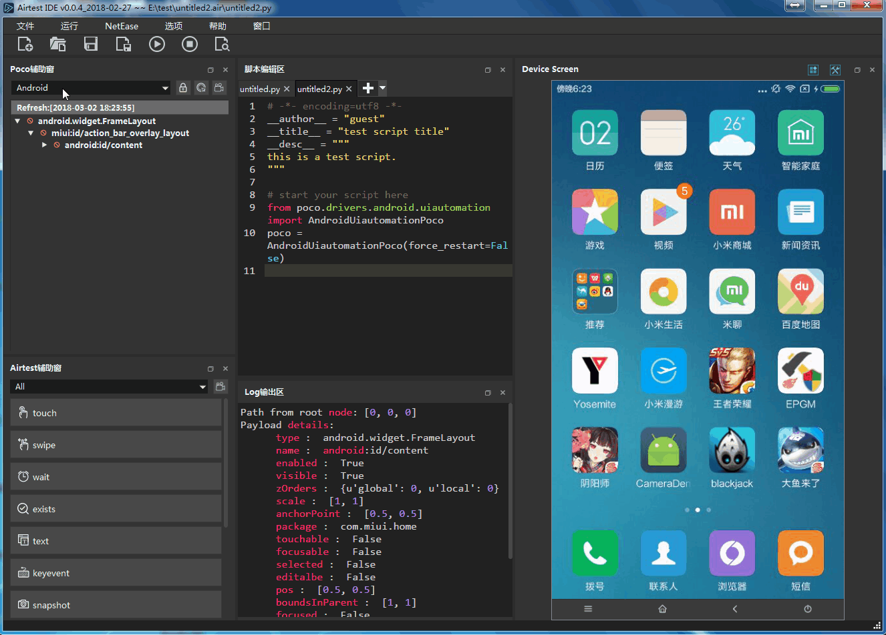

版权声明：允许转载，但转载必须保留原链接；请勿用作商业或者非法用途
通过阅读本篇教程，你将会了解到：
Poco支持直接对任何Android原生应用（非游戏引擎、非webview）进行UI层次结构识别，用法上与Poco在其他平台上一模一样。
注：基于webview的应用比较特殊（如微信小程序或浏览器），请见文档Poco如何支持WebView检视。
在AirtestIDE的Poco Assistant面板中选择Android模式之后，AirtestIDE会开始自动向手机里安装Pocoservice.apk和Pocoservice-test.apk，部分型号手机需要手动点击确认安装才能顺利安装。
安装完成后，AirtestIDE会自动启动PocoService，它会定时抓取 Android上界面的层次结构信息，稍等片刻就可以在AirtestIDE界面中看到当前界面的UI层次结构树。
点击UI树上的任意节点，可以Log面板中看到该节点的所有属性，同时设备画面中将出现方框，把对应位置框选出来，方便定位节点。

如果Pocoservice启动失败，会导致Pocoservice.apk反复重装，此时可以检查以下几个方面：
Android SDK API ≥ 19，即Android 4.4及以上poco\poco\drivers\android\lib目录下能够找到这两个APKYosemite输入法设置为默认输入法+当前输入法在这里我们提供一个使用Poco对一个计算器应用编写代码的例子，点这里下载示例App(calculator)，并事先将此App安装到手机上。
按照刚才说的，在AirtestIDE中的Poco辅助窗下拉菜单中选择Android后，AirtestIDE将会自动启动Pocoservice，显示出当前的UI控件层次结构树。此后就可以在AirtestIDE中进行Poco语句的编写和录制了。
下面这段代码例子将演示一个简单的功能：点击calculator的界面，实现一个1+1=2的运算验证。
from poco.drivers.android.uiautomation import AndroidUiautomationPoco
poco = AndroidUiautomationPoco()
poco('com.google.android.calculator:id/digit_1').click()
poco('com.google.android.calculator:id/op_add').click()
poco('com.google.android.calculator:id/digit_1').click()
poco('com.google.android.calculator:id/eq').click()
result = poco('com.google.android.calculator:id/formula').get_text()
assert_equal(result, '2', '1+1=2 ^^')在这段代码中，我们使用poco = AndroidUiautomationPoco()初始化了一个poco对象，然后分别选取了1 + 1按钮进行点击操作后，使用get_text接口非常轻松地获取到了结果控件的值2，并且使用断言语句进行结果验证。
这个例子非常简单，更多poco用法和例子请见poco tutorial。
在上一篇教程（四、如何在Android手机上进行测试（上）-多机协作）中，我们提到了一个脚本里可以连接多台Android手机，并且用set_current接口在手机之间切换：
from airtest.core.api import connect_device
dev1 = connect_device("Android://127.0.0.1:5037/serialno1") # 连上第一台手机
dev2 = connect_device("Android://127.0.0.1:5037/serialno2") # 第二台手机
set_current(1)假如我们在连上手机后，想要分别使用poco去获取控件和点击这两台不同的手机，此时需要分别初始化两个poco，就像这样：
from airtest.core.api import connect_device
dev1 = connect_device("Android://127.0.0.1:5037/serialno1") # 连上第一台手机
poco1 = AndroidUiautomationPoco(dev1)
dev2 = connect_device("Android://127.0.0.1:5037/serialno2") # 第二台手机
poco2 = AndroidUiautomationPoco(dev2)
set_current(1) # 切到第二台手机
poco2('com.google.android.calculator:id/digit_1').click()同理，假如不使用connect_device接口连接手机，而是通过直接在命令行中传入--device来自动连接手机的话，不需要在代码里重复执行connect_device。此时只需要分别获取到设备对象，并且使用设备对象初始化poco就可以了：
from airtest.core.api import G
print(G.DEVICE_LIST) # 假设当前总共有2台手机
poco1 = AndroidUiautomationPoco(G.DEVICE_LIST[0])
poco2 = AndroidUiautomationPoco(G.DEVICE_LIST[1])